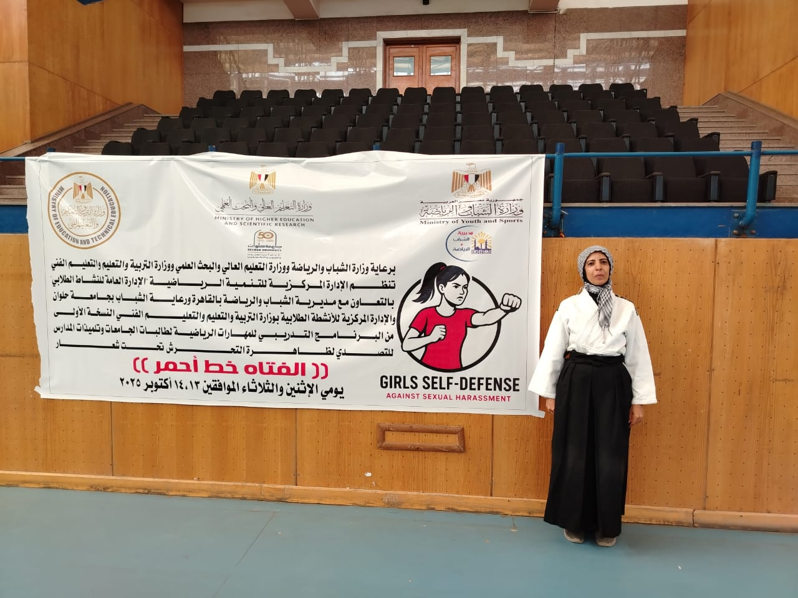
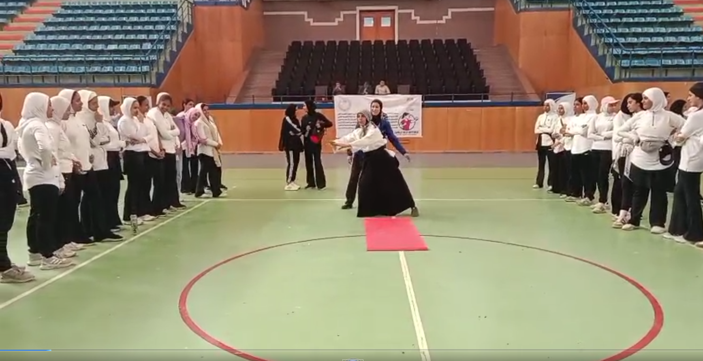
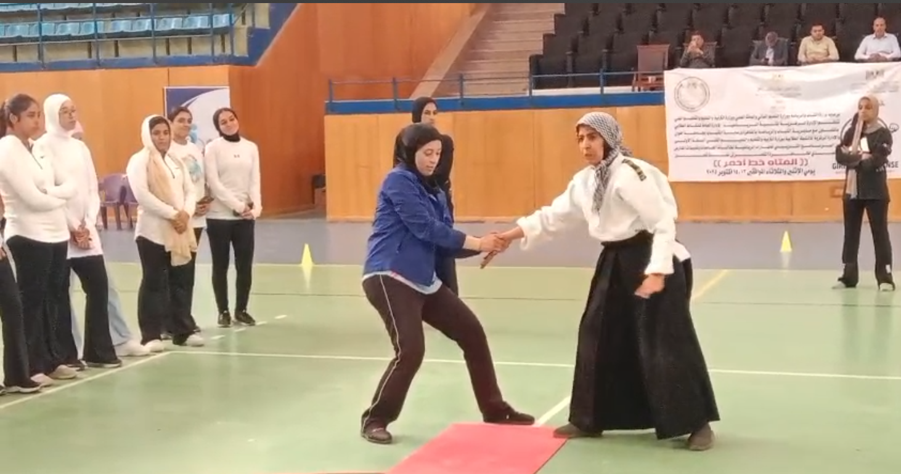
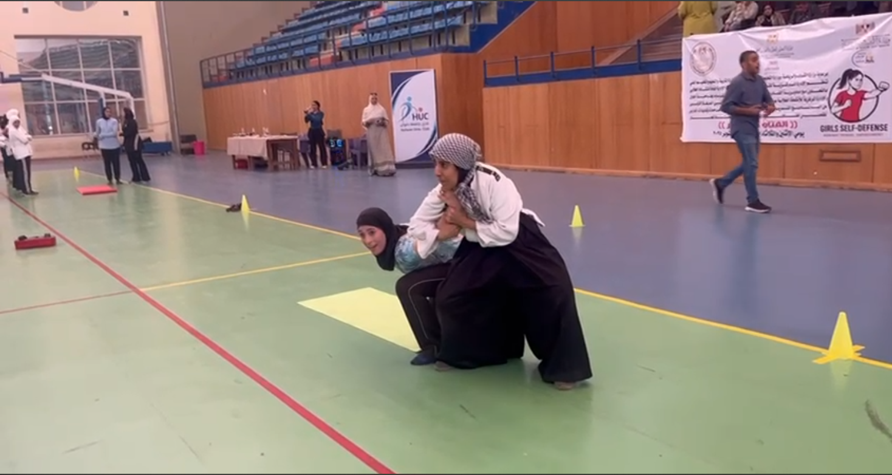
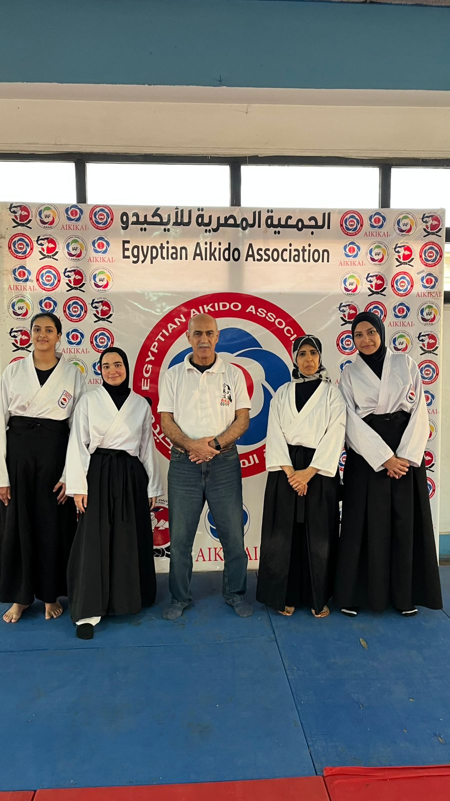
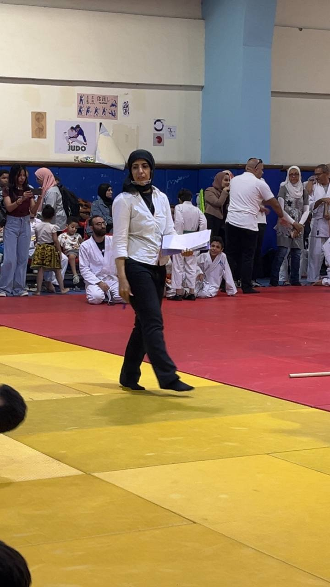
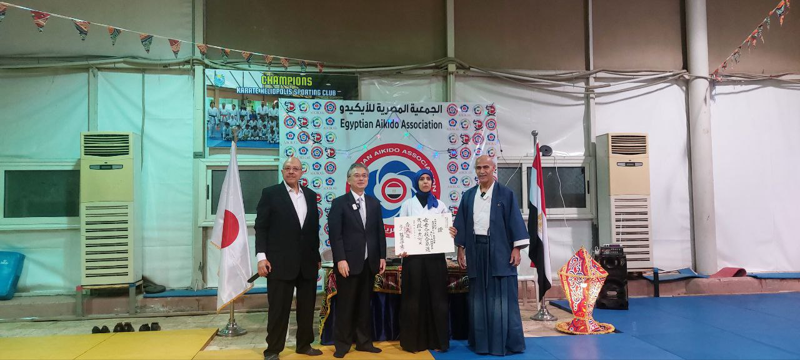
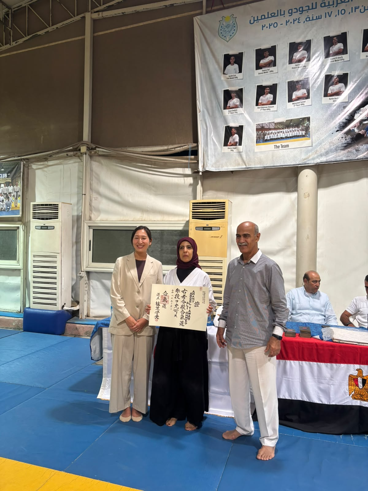

Amany Abd El-Tawab Ali | أماني عبد التواب علي
Senior Software Engineer (Java & Salesforce) • 3rd Dan Aikido Instructor & Fukushidoin
About Me
Senior Software Engineer with 10+ years of experience in Full-Stack Java and Salesforce enterprise systems, combined with the discipline of a Japanese-certified 3rd Dan (Sandan) Aikido Instructor & Fukushidoin in Cairo, Egypt. My work and published academic research bridge software technology with martial arts training to empower women's safety, self-confidence, and community leadership.
Published Scientific Research | الأبحاث العلمية المنشورة
An interdisciplinary study combining core Aikido self-defense techniques (Nikyo, Sankyo, Kotegaeshi, Shiho Nage) with rapid-response mobile safety software (Life360, Get Home Safe, Najda, SOS Alert), demonstrating statistically significant improvements in women's self-confidence and personal safety readiness.
دراسة تطبيقية تجمع بين التدريب على مهارات الأيكيدو الأساسية للدفاع عن النفس (نيكيو، سانكيو، كوتي جايشي، شيهو ناجي) وتوظيف برمجيات الهواتف الذكية للطوارئ والأمان الشخصي (Life360، Get Home Safe، Najda، SOS Alert) خلال 10 ثوانٍ، وأثبتت النتائج فاعلية الدمج بين الجانب البدني والتقني في تعزيز الثقة بالنفس والوقاية من العنف ضد المرأة.
https://jphalexu.journals.ekb.eg/article_487586.html
Software Engineering
- Backend: Java, Spring Boot, REST APIs, Microservices
- Cloud CRM: Salesforce (Apex, LWC, Aura)
- Desktop & Web: JavaFX, Python (Tkinter), JS/HTML/CSS
- Databases: MongoDB, SQL
- Highlights: Technical Lead for national electricity SCADA systems; 3 years Senior Salesforce Developer for an Italian enterprise.

Aikido Instruction (Egypt)
- Rank: 3rd Dan (Sandan) Black Belt – Aikikai Hombu Dojo, Tokyo, Japan
- Certification: Fukushidoin (Assistant Instructor) – Aikikai Hombu Dojo, Tokyo, Japan
- Classes in Cairo: Certified Aikido instructor for ladies (سيدات) and youth/children
- Credentials: Egyptian Olympic Committee foundational coaching certification & Aikikai Hombu Dojo (Tokyo) Fukushidoin certification
Aikido Training, Examinations & Coaching Gallery












Official 3rd Dan (Sandan) Black Belt Certificate – Aikikai Hombu Dojo, Tokyo, Japan
Education & Languages
B.Sc. in Electronic Engineering (Communications)
Languages: Arabic (Native), English (Professional), Italian